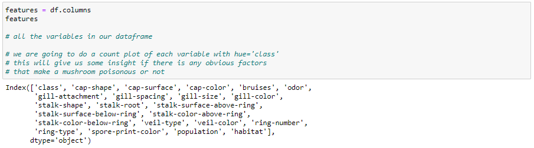
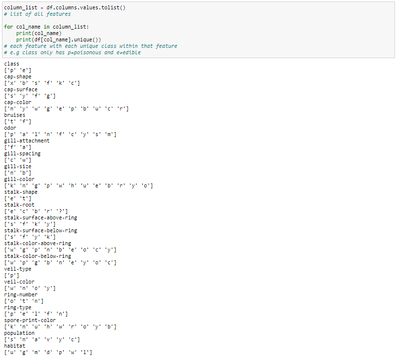
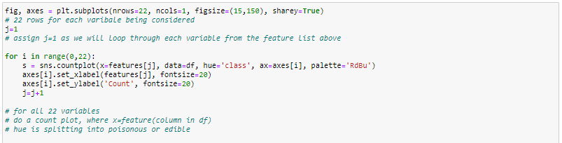
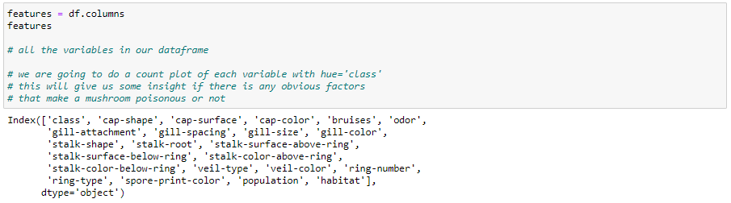
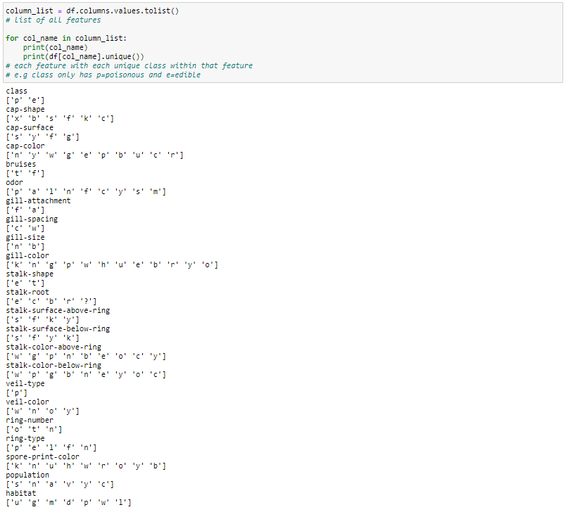
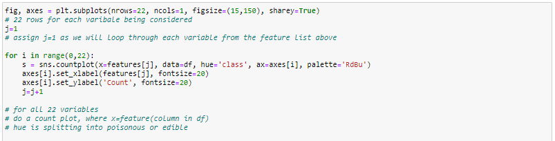
 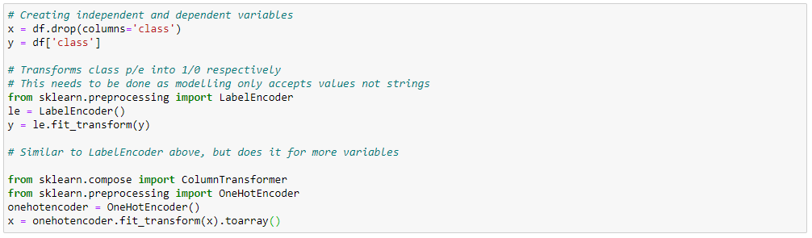
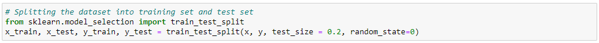
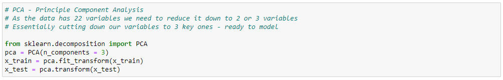
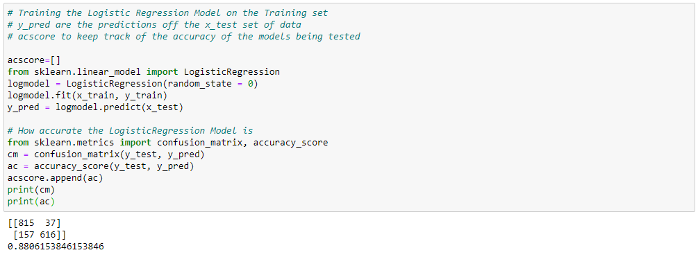
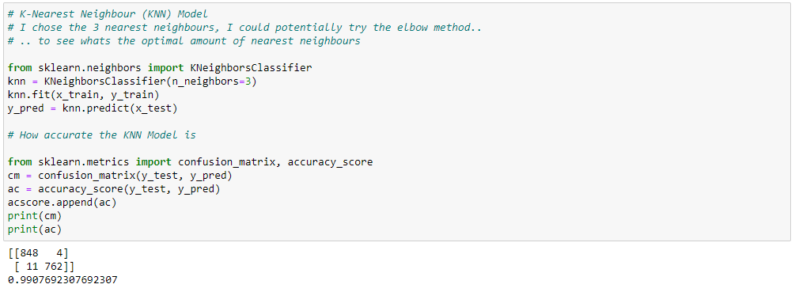
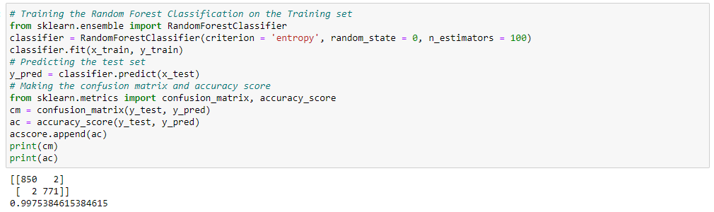
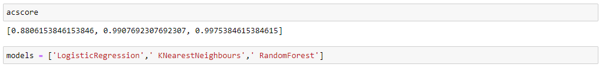
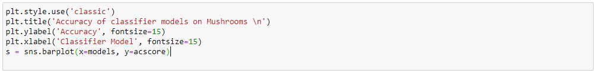
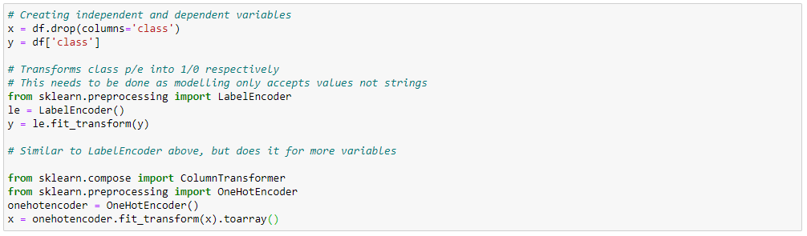
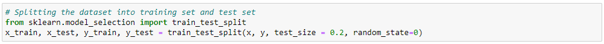
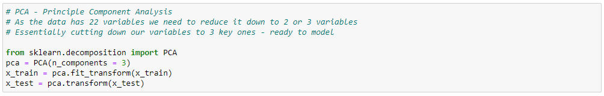
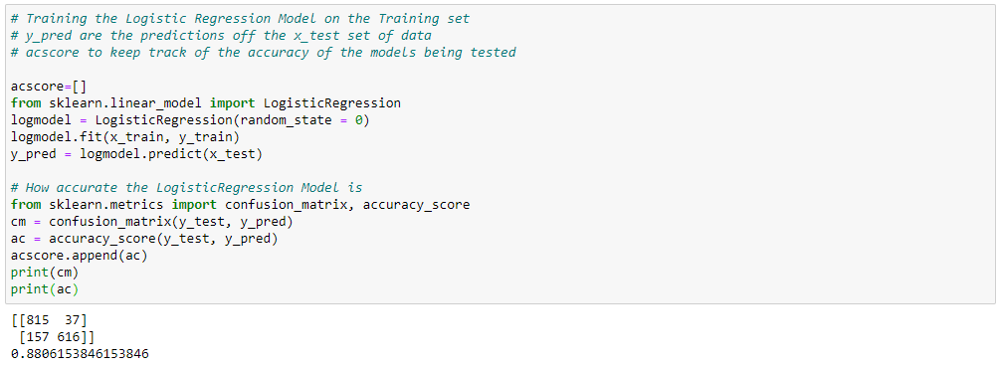
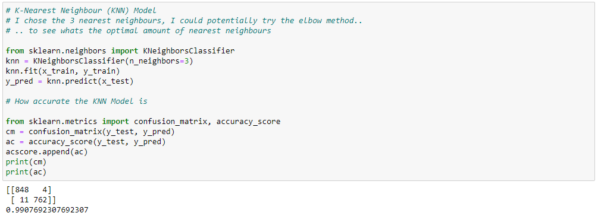
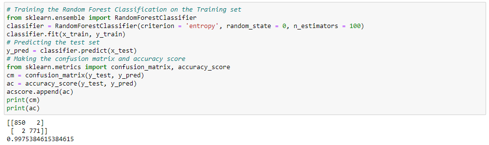
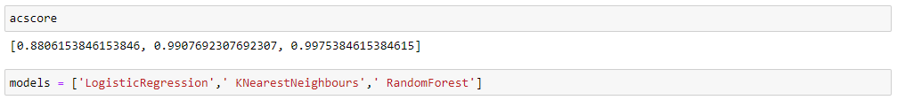
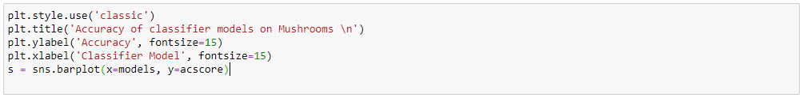

The idea driving this project was to classify between poisonous and edible mushrooms, I wanted test the accuracy of Logistic Regression, K Nearest Neighbour and Random Forest to see which model prevailed. As you can see from the dataframe (df) we have 8124 rows (mushrooms) and 23 columns (features of the mushroom) to work with, where ‘class’ column the definitive feature as it indicated where the mushroom is edible or not. The first plot created revealed the number of poisonous or edible mushrooms in a simple bar chart showing us there were just under 300 more edible mushrooms in the dataset.
Taking a closer look at the various features you can see how some features such as ‘bruises’ had only two types of types whereas the ‘gill-color’ had over ten. Exploring the data, I wanted to see if any feature had a clear relationship to whether or not the mushroom was edible or not, therefore I did another countplot with the ‘hue=class’ so every variation of every feature was broadly assessed. Looking at the graphs there are some features that stood out to me ‘gill-size’ for instance. For the ‘n’ type of gill size you have a very good chance of predicted if the mushroom is poisonous or not with the disparity of the results; on the other hand, ‘veil-type’ or ‘stalk-shape’ your guess is as good as mine.
In order to test our models out later I split the data into our ‘independent’ and ‘dependent’ variables, in other words we’re measuring whether or not the mushroom is edible or not by using the various features we have about it. Before we got into the model the dataset needed to be transformed from strings like ‘p’ or ‘e’ into numerical values such as 1 or 0, therefore the ‘LabelEncoder’ was utilised. Similarly, for all the features and their variations the ‘OneHotEncoder’ was the appropriate tool to transform the dataset consequently producing a dataset filled with 1’s or 0’s.
As we have said previously there are many features (or variables) mushrooms have so we need to use Principle Component Analysis (PCA) to essentially cut down the number of variables to two or three of the most important ones, in my example I chose three shown by ‘(n_components = 3)’ and assigned this now smaller dataset to my x_train and x_test variables. Now finished the modelling is ready to start.
Each modelling technique was used and their accuracy was appended to a list ready for us to plot on the graph. It has to be said that all three classifiers did a fairly good job in determining the edibility of the mushroom with the lowest accuracy of 0.88 or 88%. However, the KNearestNeighbours scored 99.07% and incredibly RandomForest managed to squeeze an even higher result of 99.75%.